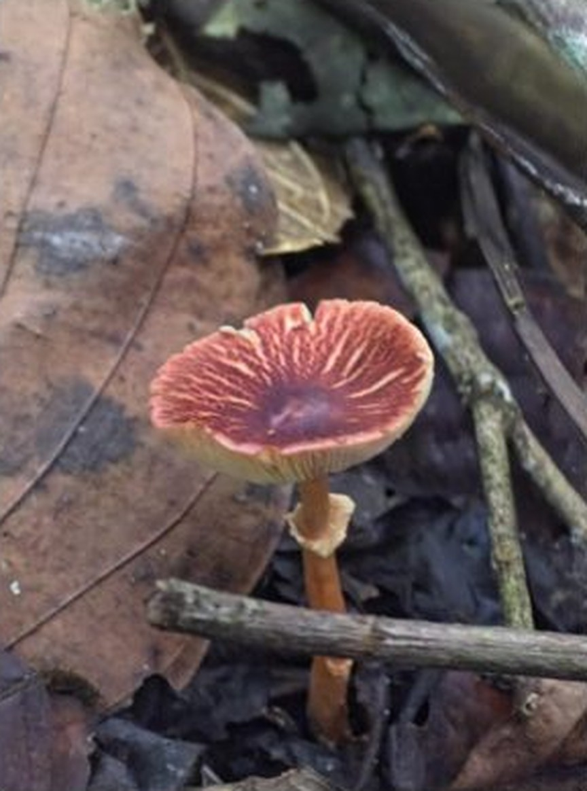
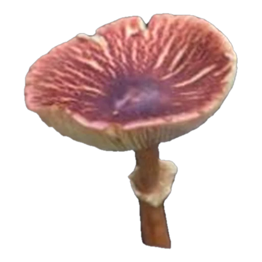

EtiquetaCF-001
Identificación tentativa · pendiente revisión docente
- Taxonomía
- Basidiomycota › Agaricales › Agaricaceae
- Sustrato
- Hojarasca
- Píleo
- Fibrillas radiales rosado-vinosas sobre fondo crema, centro violáceo
- Estípite
- Central, anaranjado a café claro, con anillo membranoso blanco-crema
- Localidad
- Reserva Forestal Bosque de Yotoco, Yotoco, Valle del Cauca
- Fecha · colector
- 20 oct 2026 · Juan David Rojas Villafañe
- Pendiente
- Escala, GPS, esporada, olor
- Archivos
- Modelo .glb · Ficha .json